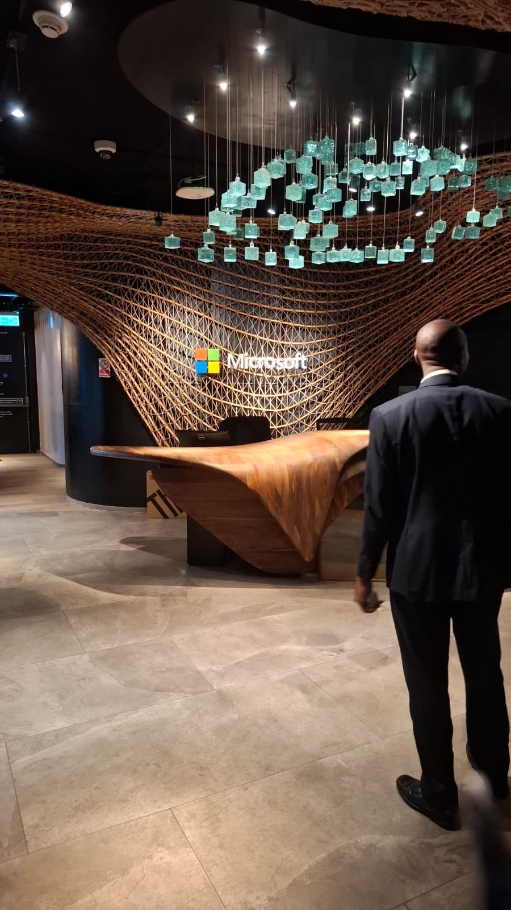
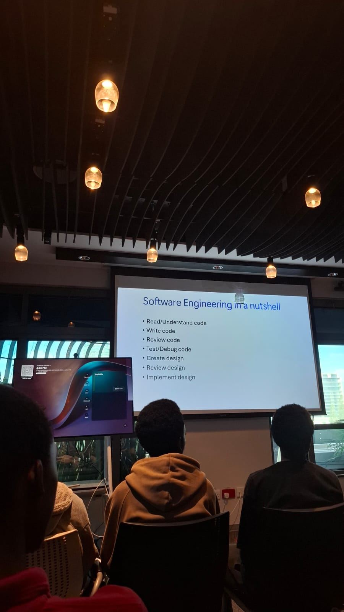
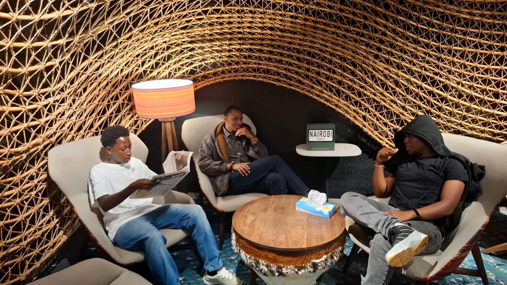

I design, build, and deploy production systems end to end — from API and database architecture to cloud infrastructure — currently studying Computer Science in Kenya.
I'm a Computer Science student who builds full-stack products independently alongside coursework — not just prototypes, but systems that stay up. That means writing the API, designing the schema, and also configuring the VCN, the security lists, and the process manager that keeps it running.
My recent work spans an AI-powered hiring platform built on FastAPI and Supabase, and a relational database + CRUD API deployed on Oracle Cloud Infrastructure for a household energy consumption dataset. Both taught me the same lesson: the interesting bugs live at the boundary between your code and the infrastructure it runs on.
Outside of shipping projects, I'm active on GitHub, documenting builds and deployment runbooks as I go.
Coursework that's directly shaped how I build — from data modeling to systems that survive contact with the cloud.
Led a group project from schema design through OCI deployment — relational modeling, triggers, stored procedures, and a live CRUD API serving real energy-consumption data.
Collections, class design patterns, and testing fundamentals — decision trees, state diagrams, and structured test-case design for real-world systems.
Two production builds, end to end — architecture, API, and the cloud infrastructure underneath them.
An AI-assisted hiring platform with authentication, rate-limited endpoints, and a Deep Space–themed UI. Hardened for production with environment-scoped secrets, restricted CORS, input sanitization, and an async email flow that switched from blocked SMTP to the Resend HTTP API when the free-tier host cut off outbound port 25.
A relational database and CRUD API built on the UCI Individual Household Electric Power Consumption dataset, for an Advanced Database Systems group project I led. Designed the schema across four related tables, wrote triggers and stored procedures, and deployed the full stack on a hand-provisioned OCI VCN — including catching a real data-quality bug in the source dataset's date formatting.
Recently spent time at Microsoft's Nairobi office sitting in on a software engineering session — a good chance to compare how the discipline is taught against how it's actually practiced day to day, and to talk shop with other developers in the room.



Open to internships, freelance work, and collaboration on interesting full-stack or AI projects.